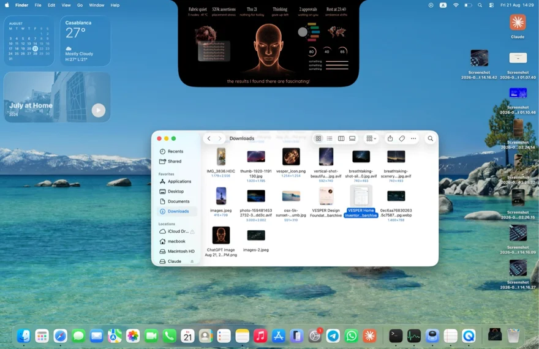
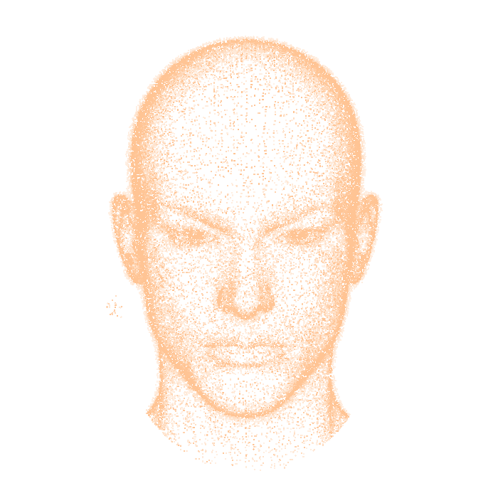
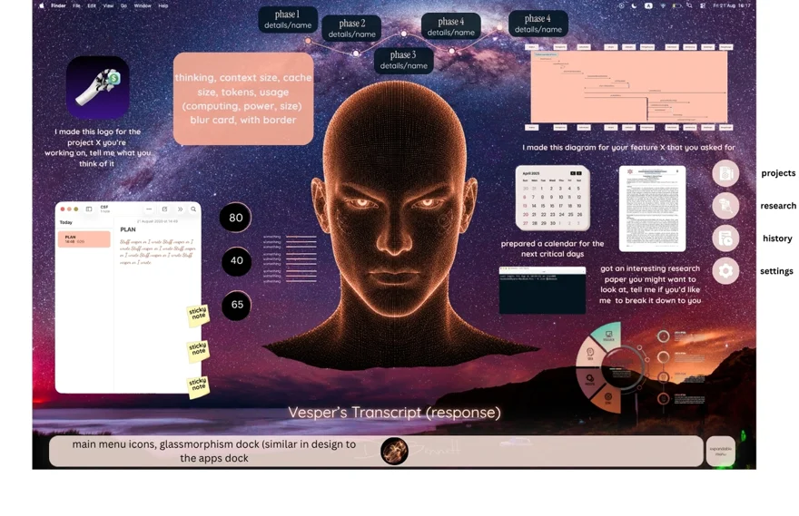
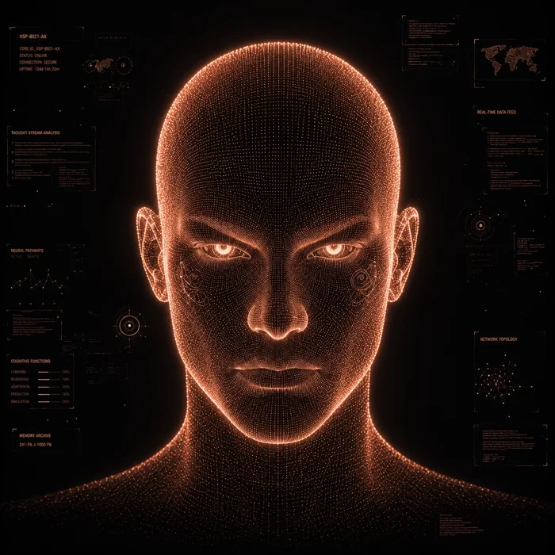
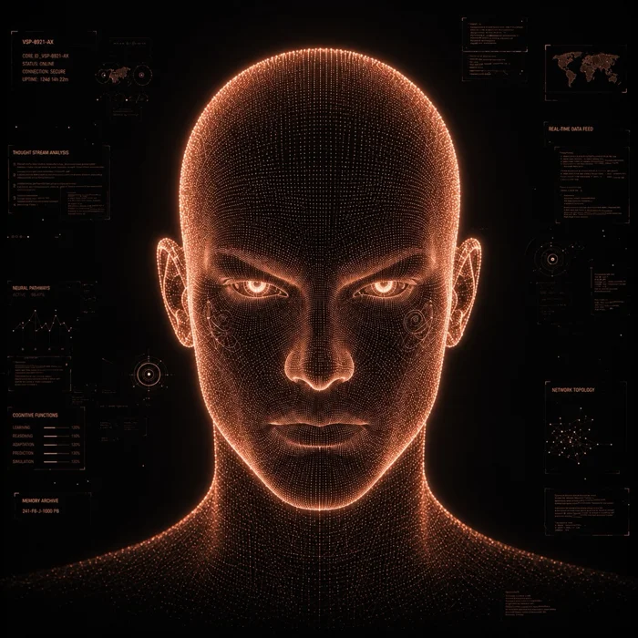

Design referenceThe island
Welded to the notch, the island keeps VESPER within reach. The face turns, dissolves and speaks.
VESPER lives on a Mac. Its models, devices and providers can change. Its identity and memory stay with it.

The model is replaceable. The device is replaceable. The UI is replaceable. The network path is replaceable. The provider is replaceable.
VESPER's identity, goals, state, policies, memory, capabilities and continuity are not supposed to disappear merely because one of those components disappears.

Design referenceWelded to the notch, the island keeps VESPER within reach. The face turns, dissolves and speaks.

Design referenceVESPER has a Desktop of its own. Call it with three taps of the globe key, or give it an empty Desktop to inhabit.

Design referenceA window for work in progress. VESPER can lay out panes, mark a whiteboard, use its own browser and follow your screen.
The island’s face is sampled from the owner’s reference, with depth added to the lit points. The site’s export held 39,805 points on 9 November 2026. Move your pointer over the portrait to turn it, or scroll to see it disperse and gather again.
Read the face generator ↗
One person built VESPER and opened the work. The voice queue, the desktop shell and the next scene are places to begin.
Explore open work